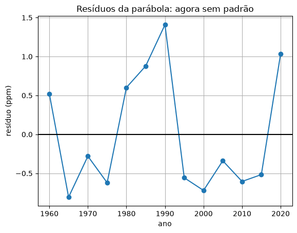
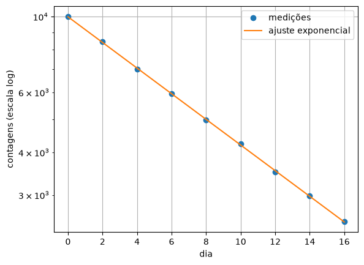
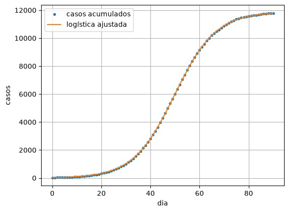

15. Ajuste não linear¶
No capítulo 14, os resíduos do CO₂ formaram um U: a reta não bastava, porque o CO₂ acelera. Muitos fenômenos não seguem retas: uma amostra radioativa decai exponencialmente, uma epidemia cresce e freia numa curva em S, o sinal de rádio cai com o logaritmo da distância, o metabolismo dos animais cresce com uma potência da massa.
Este capítulo mostra três saídas, da mais simples para a mais geral: um polinômio (a mesma conta da reta, com mais termos), a linearização (transformar os dados até a relação virar reta) e o ajuste direto de qualquer modelo, com uma ferramenta pronta. E mostra também o perigo do outro lado: um modelo flexível demais, que passa a ajustar o ruído.
Quando a reta não basta: o polinômio¶
A regressão linear minimiza a soma dos quadrados dos resíduos. Nada impede que o
modelo tenha mais termos: \(\hat y = a_0 + a_1 t + a_2 t^2\). As equações normais
continuam sendo um sistema linear (agora 3 × 3), porque o modelo é linear nos
coeficientes, mesmo sendo uma curva em \(t\). É o que o np.polyfit faz com grau 2.
# O CO2 acelera: uma parabola, e nao uma reta. Os anos sao contados a partir
# de 1960 (t = ano - 1960) para os numeros da matriz nao ficarem enormes.
import numpy as np
import matplotlib.pyplot as plt
dados = np.loadtxt("co2_mauna_loa.csv", delimiter=",", skiprows=1)
ano = dados[:, 0]
co2 = dados[:, 1]
t = ano - 1960
coef = np.polyfit(t, co2, 2) # [a2, a1, a0]
previsto = coef[0] * t**2 + coef[1] * t + coef[2]
residuos = co2 - previsto
r2 = 1 - np.sum(residuos**2) / np.sum((co2 - np.mean(co2))**2)
print(f"CO2 = {coef[2]:.2f} + {coef[1]:.4f} t + {coef[0]:.5f} t² (t = ano - 1960)")
print(f"R² = {r2:.5f}")
print("residuos:", np.round(residuos, 1))
plt.figure()
plt.plot(ano, residuos, "o-")
plt.axhline(0, color="black")
plt.xlabel("ano")
plt.ylabel("resíduo (ppm)")
plt.title("Resíduos da parábola: agora sem padrão")
plt.grid()
plt.show()
CO2 = 316.39 + 0.8259 t + 0.01313 t² (t = ano - 1960)
R² = 0.99941
residuos: [ 0.5 -0.8 -0.3 -0.6 0.6 0.9 1.4 -0.6 -0.7 -0.3 -0.6 -0.5 1. ]

O \(R^2\) subiu de 0,98 para 0,9994, mas o que importa é o gráfico: os resíduos agora oscilam sem padrão, entre −1 e 1,4 ppm. O termo \(0{,}013\,t^2\) é a aceleração que a reta não via.
💡 Pense assim: por que \(t = \text{ano} - 1960\)?
Com o ano direto, \(x^2\) vale quase 4 milhões e a matriz das equações normais mistura números de ordens de grandeza muito diferentes: fica mal condicionada (capítulo 8). Contar o tempo a partir do começo dos dados deixa os números pequenos e a conta, precisa.
Sobreajuste¶
Se o grau 2 foi melhor que o 1, grau 10 seria ainda melhor? O teste certo é separar os dados: uma parte ajusta o modelo (treino) e a outra, que ele não viu, confere (teste).
# Quebre o metodo: polinomios de grau cada vez maior nos dados da latencia.
# Metade dos pontos ajusta (treino); a outra metade confere (teste).
import numpy as np
dados = np.loadtxt("latencia_servidor.csv", delimiter=",", skiprows=1)
x = dados[:, 0] / 100 # centenas de usuarios (numeros menores)
y = dados[:, 1]
x_treino = x[0::2] # posicoes pares
y_treino = y[0::2]
x_teste = x[1::2] # posicoes impares
y_teste = y[1::2]
def avalia(coef, x):
grau = len(coef) - 1
total = 0.0
for k in range(len(coef)):
total = total + coef[k] * x**(grau - k)
return total
print("grau erro no treino erro no teste (desvio tipico, ms)")
for grau in [1, 2, 4, 6, 8, 10]:
coef = np.polyfit(x_treino, y_treino, grau)
erro_treino = np.sqrt(np.mean((avalia(coef, x_treino) - y_treino)**2))
erro_teste = np.sqrt(np.mean((avalia(coef, x_teste) - y_teste)**2))
print(f"{grau:4d} {erro_treino:12.2f} {erro_teste:12.2f}")
grau erro no treino erro no teste (desvio tipico, ms)
1 2.66 2.39
2 2.66 2.42
4 1.88 2.37
6 1.61 2.67
8 0.92 2.84
10 0.74 4.03
💥 Quebre o método
Com o grau subindo, o erro no treino só cai: um polinômio de grau 10 tem coeficientes de sobra para se contorcer e passar perto de cada ponto, ruído incluído. Mas o erro no teste sobe de 2,4 para 4,0 ms: o modelo decorou o ruído do treino e erra mais nos pontos novos. É o sobreajuste (overfitting), o fenômeno de Runge do capítulo 11 vestido de estatística. A regra: escolha o modelo pelo erro no teste, e prefira o mais simples que explica os dados.
No quadro: a linearização¶
Alguns modelos curvos viram retas com uma troca de variável. Aí, a reta de mínimos quadrados do capítulo 14 resolve tudo.
🧑🏫 No quadro — linearizando exponenciais e potências
1. Exponencial, \(y = a\,e^{bx}\) (crescimento de bactérias, decaimento radioativo, descarga de um capacitor). Tire o logaritmo natural dos dois lados:
É uma reta entre \(x\) e \(\ln y\), com inclinação \(b\) e intercepto \(\ln a\).
2. Potência, \(y = a\,x^b\) (lei de Kleiber, área × lado, resistência do ar × velocidade). O logaritmo dos dois lados:
É uma reta entre \(\ln x\) e \(\ln y\): o gráfico log-log do capítulo 2.
3. Ajuste a reta nos dados transformados e desfaça a transformação: \(a = e^{\text{intercepto}}\).
4. Um detalhe honesto: minimizar os quadrados em \(\ln y\) não é o mesmo que em \(y\) (os pontos pequenos ganham mais peso). Quase sempre é bom o bastante; quando não for, use o ajuste direto da próxima seção.
🌍 Contexto: meia-vida
Uma amostra radioativa perde, a cada instante, uma fração fixa dos seus átomos: o número deles decai como \(N_0\,e^{-kt}\). A meia-vida, o tempo para cair à metade, é \(\ln 2 / k\). O iodo-131, usado no diagnóstico e tratamento da tireoide, tem meia-vida de 8 dias. Um detector conta os decaimentos da amostra a cada dia.
# Medicina nuclear: um detector conta os decaimentos de uma amostra de iodo-131
# ao longo dos dias. N = N0 * e^(-k t). No logaritmo, ln N = ln N0 - k t: uma
# reta em t -- e a reta ja sabemos ajustar.
import numpy as np
import matplotlib.pyplot as plt
dia = np.array([0, 2, 4, 6, 8, 10, 12, 14, 16])
contagem = np.array([10020, 8440, 7010, 5950, 4970, 4230, 3500, 2980, 2510])
coef = np.polyfit(dia, np.log(contagem), 1) # a reta de ln(contagem)
k = -coef[0]
N0 = np.exp(coef[1])
meia_vida = np.log(2) / k
print(f"N0 = {N0:.0f} contagens, k = {k:.4f} por dia")
print(f"meia-vida = {meia_vida:.2f} dias (a do iodo-131 e 8,02 dias)")
plt.figure()
plt.semilogy(dia, contagem, "o", label="medições")
plt.semilogy(dia, N0 * np.exp(-k * dia), label="ajuste exponencial")
plt.xlabel("dia")
plt.ylabel("contagens (escala log)")
plt.grid()
plt.legend()
plt.show()

A meia-vida medida, 8,00 dias, bate com a do iodo-131. No gráfico com o eixo vertical
em escala log (plt.semilogy, do capítulo 4), a exponencial vira reta, e a conferência
é visual.
Em telecomunicações, as potências são medidas em decibéis, que usam o logaritmo na base 10.
🧰 Comando novo: np.log10
np.log10(x) é o logaritmo na base 10: np.log10(1000) é 3, porque
\(10^3 = 1000\). É o logaritmo dos decibéis: \(10\log_{10}(P_1/P_2)\). Dá o mesmo que
np.log(x) / np.log(10).
Um modelo que não se lineariza¶
A curva logística de uma epidemia, \(C(t) = \dfrac{K}{1 + A\,e^{-rt}}\), não vira reta com nenhum logaritmo. Para ela, e para qualquer modelo, existe o ajuste direto: um método iterativo que procura os parâmetros que minimizam a soma dos quadrados (parente do Newton para otimização do capítulo 6, com várias variáveis).
🧰 Comando novo: from scipy.optimize import curve_fit
curve_fit(modelo, x, y, p0=[...]) ajusta os parâmetros de uma função
modelo(x, p1, p2, ...) aos dados. O primeiro argumento do modelo é sempre o \(x\);
os outros são os parâmetros a ajustar. p0= é a lista dos chutes iniciais,
um por parâmetro: como no Newton, um chute ruim pode levar a uma resposta ruim.
Ele devolve dois resultados: os parâmetros ajustados e uma matriz com a
incerteza deles (que o curso não usa).
# Um modelo que nao se lineariza: a curva logistica de uma epidemia,
# C(t) = K / (1 + A e^(-r t)).
# O curve_fit do scipy ajusta os tres parametros direto, por minimos quadrados.
import numpy as np
import matplotlib.pyplot as plt
from scipy.optimize import curve_fit
dados = np.loadtxt("casos_acumulados.csv", delimiter=",", skiprows=1)
dia = dados[:, 0]
casos = dados[:, 1]
def logistica(t, K, A, r):
return K / (1 + A * np.exp(-r * t))
parametros, covariancia = curve_fit(logistica, dia, casos, p0=[10000, 100, 0.1])
K, A, r = parametros
print(f"K = {K:.0f} casos no total, A = {A:.1f}, r = {r:.4f} por dia")
print(f"pico de casos novos (ponto de inflexao) no dia {np.log(A) / r:.1f}")
plt.figure()
plt.plot(dia, casos, ".", label="casos acumulados")
plt.plot(dia, logistica(dia, K, A, r), label="logística ajustada")
plt.xlabel("dia")
plt.ylabel("casos")
plt.grid()
plt.legend()
plt.show()
K = 11884 casos no total, A = 372.0, r = 0.1188 por dia
pico de casos novos (ponto de inflexao) no dia 49.8

Com os dados de casos acumulados do capítulo 3, o ajuste estima o total da epidemia (cerca de 11 900 casos) e o dia do pico (49,8). No capítulo 3, a derivada do dado com ruído dizia dia 47; o modelo do qual os dados foram gerados diz 49,9. Ajustar um modelo às medições filtra o ruído que a derivada amplificava.
Mesmo método, outra área¶
🌍 Contexto: a lei de Kleiber
Em 1932, o biólogo Max Kleiber notou que o metabolismo basal dos animais (a energia gasta em repouso) cresce com a massa elevada a um expoente perto de 3/4, do camundongo ao elefante. Um animal 10 vezes mais pesado não gasta 10 vezes mais energia, mas cerca de 5,6. É uma das leis mais gerais da biologia, e ainda se discute por que o expoente é esse.
# Mesmo metodo, outra area: a lei de Kleiber. O gasto de energia de um animal em
# repouso (metabolismo basal) cresce com a massa, mas nao em proporcao direta:
# M = a * m^b. No log-log, ln M = ln a + b ln m: uma reta.
# (valores aproximados, de livros de fisiologia)
import numpy as np
animal = ["camundongo", "rato", "gato", "cachorro", "humano", "cavalo", "elefante"]
massa = np.array([0.021, 0.29, 3.0, 15.0, 70.0, 500.0, 4000.0]) # kg
metabolismo = np.array([0.21, 1.45, 8.3, 30.0, 80.0, 350.0, 2300.0]) # W
coef = np.polyfit(np.log(massa), np.log(metabolismo), 1)
b = coef[0]
a = np.exp(coef[1])
print(f"M = {a:.2f} * m^{b:.3f}")
print(f"um animal 10 vezes mais pesado gasta {10**b:.1f} vezes mais energia")
A reta no gráfico log-log dá o expoente 0,755: a lei de Kleiber, a partir de sete
animais e de um np.polyfit nos logaritmos.
Erros comuns deste capítulo¶
| Sintoma | Causa provável |
|---|---|
nan ou erro no np.log |
logaritmo de zero ou de número negativo: a linearização exige \(y > 0\) |
| o \(a\) ajustado sai estranho | faltou desfazer o logaritmo: \(a = e^{\text{intercepto}}\) |
curve_fit avisa que não convergiu, ou dá parâmetros absurdos |
chutes iniciais (p0) ruins: comece com valores de ordem de grandeza certa, olhando o gráfico |
| polinômio de grau alto com coeficientes estranhos | números grandes em \(x\) (anos): conte a partir do começo dos dados |
| o modelo ajusta o treino e erra o resto | sobreajuste: reduza o grau, confira com dados de teste |
Onde isso é usado de verdade¶
- Telecomunicações: os modelos de propagação (quanto o sinal cai com a distância) são ajustados a medições de campo, em dB e escala log. É assim que as operadoras planejam onde pôr antenas.
- Saúde: meia-vida de remédios, curvas de epidemia, curvas dose-resposta.
- Física e química: constantes de decaimento, de reação, de resfriamento, tudo por ajuste de exponenciais.
- Aprendizado de máquina: treino e teste, sobreajuste e a escolha da complexidade do modelo são o dia a dia da área.
- Biologia e ecologia: leis de potência (Kleiber, área × número de espécies), crescimento populacional.
Resumo¶
- Um polinômio de grau maior ainda é ajuste linear nos coeficientes:
np.polyfitcom grau 2 ou 3. - Mais parâmetros podem sobreajustar: confira o modelo com dados de teste que ele não viu.
- Linearização: exponencial vira reta em \((x, \ln y)\); potência, em \((\ln x, \ln y)\).
- Modelos que não se linearizam se ajustam direto, com
curve_fite bons chutes iniciais. - Sempre confira os resíduos: eles dizem se o modelo capturou o fenômeno.
Para praticar¶
A Lista 15 tem uma linearização à mão (✏️), o ajuste de uma exponencial e de uma potência, a escolha do grau por treino e teste e o ajuste de uma curva de aprendizagem.